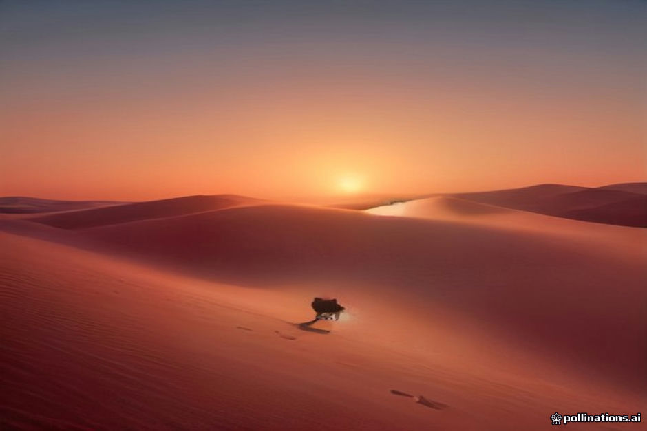

The drive from Marrakesh to the Erg Chebbi dunes near Merzouga covers roughly 560 kilometers each way. While online brochures highlight photographs of quiet sand dunes and starry nights, the transit involves navigating the winding High Atlas Mountains via the Tizi n'Tichka pass, traversing long stretches of single-lane valley roads, and spending continuous hours inside a passenger vehicle. For older travelers—particularly those dealing with joint stiffness, back discomfort, or lower physical stamina—itinerary pacing dictates whether the trip is enjoyable or exhausting.
Booking a private tour allows you to customize departure times and restroom breaks, but geography remains fixed. Choosing between a 3-day express route and a relaxed 4-day itinerary comes down to how many hours your body can comfortably tolerate in a seat each day, and whether you want to explore historical sites like Ait Ben Haddou at an unhurried pace or view them briefly before moving on. For more details on multi-generational considerations, read our guide on Marrakesh to Merzouga with kids and elderly travelers.
The 3-Day Itinerary: Total Driving Hours and Physical Strain
On a standard 3-day private itinerary, Day 1 requires 6 to 7 hours of driving from Marrakesh to the Dades Valley or Ouarzazate, including the mountain pass crossing. Day 2 adds another 4 to 5 hours of transit to reach the dunes at Erg Chebbi before sunset. Day 3 is the most demanding leg of the route, requiring 9 to 10 hours of continuous driving to return from Merzouga back to Marrakesh in a single day.
For active seniors without joint pain or mobility restrictions, this timeline is manageable. However, prolonged sitting over uneven mountain roads can worsen lower back stiffness and leg fatigue. Sightseeing stops become brief photo opportunities rather than immersive visits, as drivers must stick to strict arrival windows to clear mountain passes before dark.
How the 4-Day Route Reduces Daily Transit Time
Adding a fourth day spreads the long return leg—or the outward journey—across an extra overnight stop, typically in the palm groves of Skoura or Ouarzazate. This caps peak daily driving times at around 3 to 4 hours, eliminating the punishing 10-hour driving day at the end of the trip.
Shorter driving days mean arriving at your hotels and desert camp by mid-afternoon. This provides energy to relax, shower, and explore historical kasbahs without rushing under midday sun. Learn more about structural expectations in our review of
Road Conditions, Mountain Curves, and Restroom Logistics
Crossing the High Atlas involves over two hours of continuous hairpin turns and elevation gains up to 2,260 meters. Travelers prone to car sickness or those requiring frequent, predictable bathroom stops often find the fast pace of a 3-day route stressful. You can review preventative options in our overview of managing motion sickness on the Tichka Pass.
Western-style seated toilets are limited along rural mountain routes. On a 4-day trip, your driver has the schedule flexibility to stop at higher-standard roadside cafes or boutique hotel restaurants, rather than stopping at basic fuel stations merely to stay on schedule.
- 3-Day Route: Mandatory long driving blocks; limited choice in restroom stop locations.
- 4-Day Route: Flexible timing; enables frequent stops at clean, accessible cafes.
- Mountain Pass Strain: 4-day routes allow breaks at scenic viewpoints without compromising arrival times.
Dune Accessibility and Camp Comfort for Older Guests
Walking on loose sand requires roughly double the physical effort of walking on firm ground. On a 3-day trip, guests often arrive at the desert edge late in the afternoon already fatigued from hours in the car, leaving little energy for evening activities.
On a 4-day itinerary, guests arrive at camp well-rested. If climbing dunes on foot is unfeasible, private transfers can arrange a 4x4 vehicle directly to camp tents. For guests with specific physical constraints, review our limited mobility Sahara desert tour guide.
| Pacing Factor | 3-Day Private Route | 4-Day Private Route |
|---|---|---|
| Max Daily Driving | 9 to 10 hours (Day 3 return) | 4 to 5 hours maximum |
| Sightseeing Pace | Rushed 30–60 min photo stops | Leisurely 2+ hour visits & rests |
| High Atlas Crossing | Compressed into full travel day | Broken into short, easy segments |
| Fatigue Level | High; noticeable cumulative strain | Low to moderate; built-in rest |
| Best Suited For | Active seniors short on time | Travelers prioritizing comfort & rest |

Illustration, not a photograph — for the real thing, you'll have to stand on the ridge yourself.
Quick answers
A few follow-up questions travelers ask about this.
Is a 3-day desert tour too demanding for travelers over 70?
It depends on individual mobility. However, the 10-hour return drive on Day 3 is physically taxing for anyone with back issues, joint stiffness, or circulatory concerns. A 4-day route is safer and far more comfortable.
Can older guests skip the camel trek to reach camp?
Yes. Private tours allow you to bypass camel riding entirely. A 4x4 transport can drive you across the dunes directly to your camp tent.
Where is the extra night spent on a 4-day Marrakesh route?
The additional overnight stay is usually spent in the palm groves of Skoura or near Ouarzazate, breaking up the return drive between the desert and the High Atlas Mountains.
Planning your own route?
Tell us your dates and what matters to you — we'll answer with a straight recommendation, not a brochure.
Send an inquiry See the itineraries